We're Open Now
Verify Our LicenceWater Filtration Sydney · NSW Licensed Plumber
Shower, Drink And Bathe In Pure Filtered Water Water Filter Installation Across Sydney, By A Licensed Plumber
Water Filtration Sydney installs whole-house, under-sink and reverse osmosis systems for homes and businesses across Sydney and Greater Sydney. Tell us your water goal and you get Get a fixed installed price, with cartridge costs shown, before you commit.
- Licence 358626C
- 3-Year Product Warranty
- Lifetime Labour Warranty
- WaterMark-Certified Components
- Sydney Metro & Greater Sydney
Takes about 30 seconds
Free In-Person Quote
Free Water Quality Testing Audit + $0 Callout
- Police checked, ID verified, $20M public liability insurance
- WaterMark certified components on every install
- Lifetime labour warranty plus 3-year product warranty


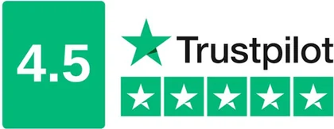

Installed Across Sydney
Recent Water Filter Installations In Sydney
Ten recent jobs, each one a whole-house or point-of-use system fitted by our licensed Sydney plumber. Scroll across for more.
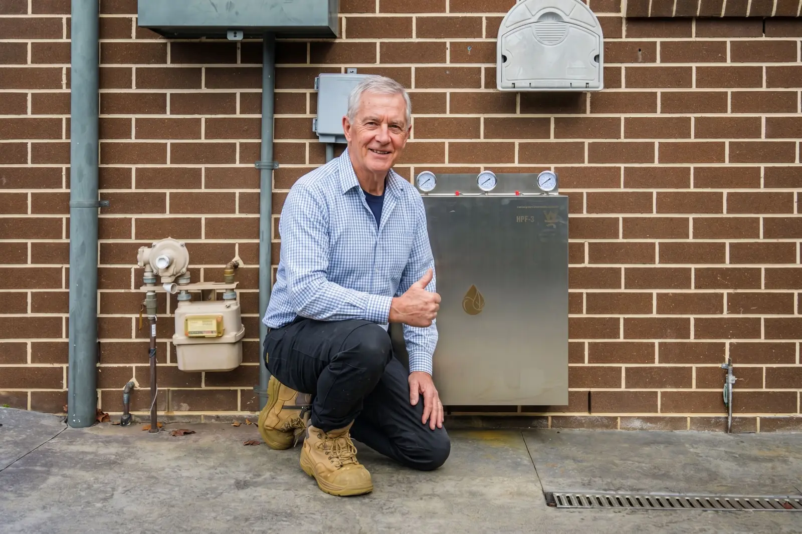
Castle Hill HPF-3 whole-house system, external wall 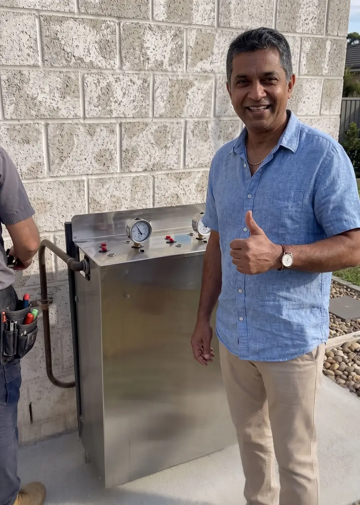
Baulkham Hills Whole-house filtration, stainless housing 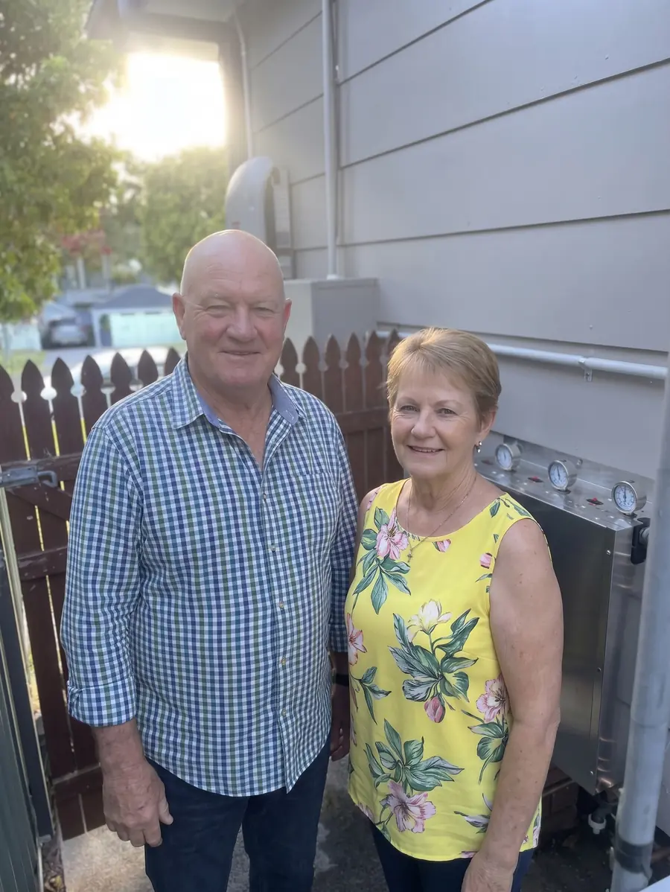
Rose Bay Whole-house water filter, side of house 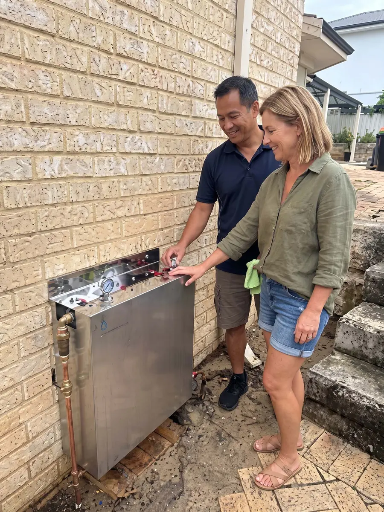
Cronulla HPF-3 filtration upgrade 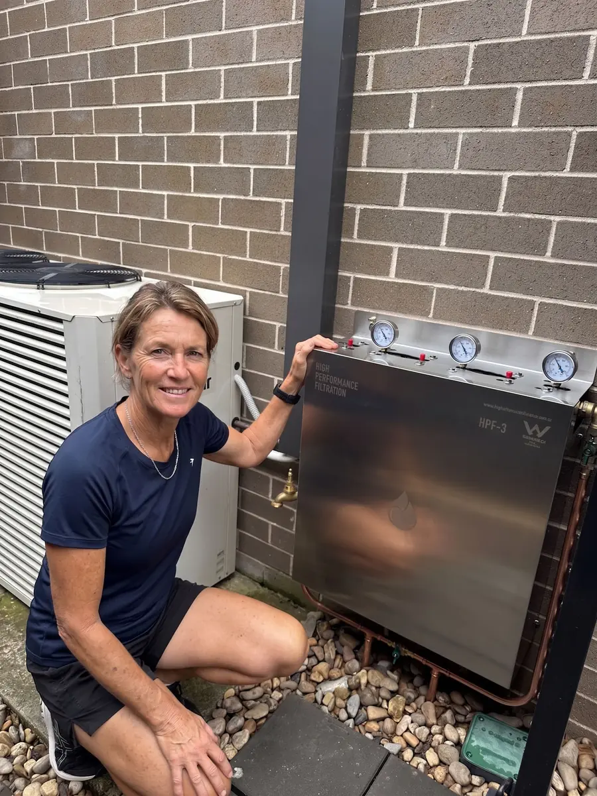
Parramatta HPF-3 whole-house filtration 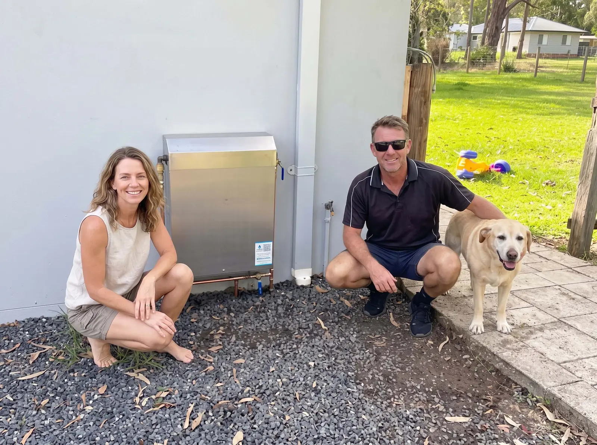
Northern Beaches Stainless whole-house system 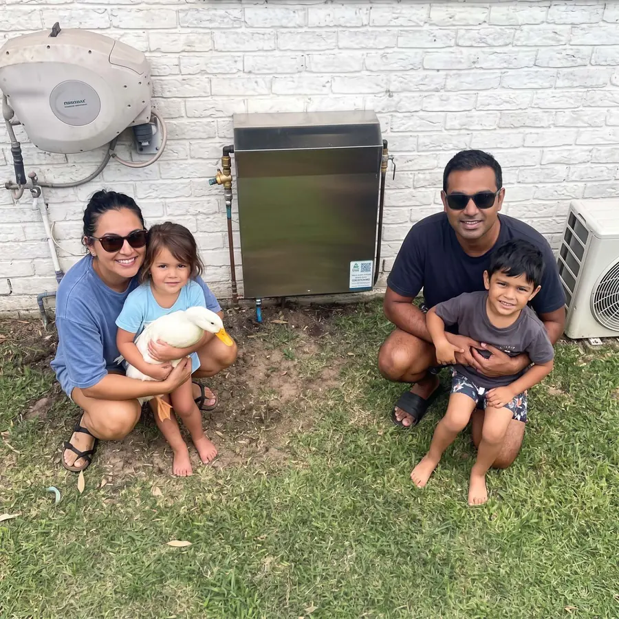
Sutherland Shire Whole-house filtration 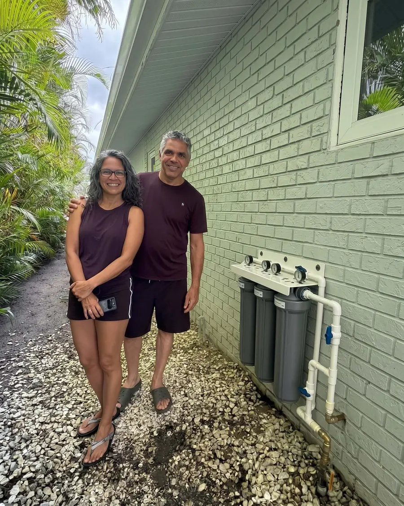
Sutherland Shire Wall-mounted triple filter system 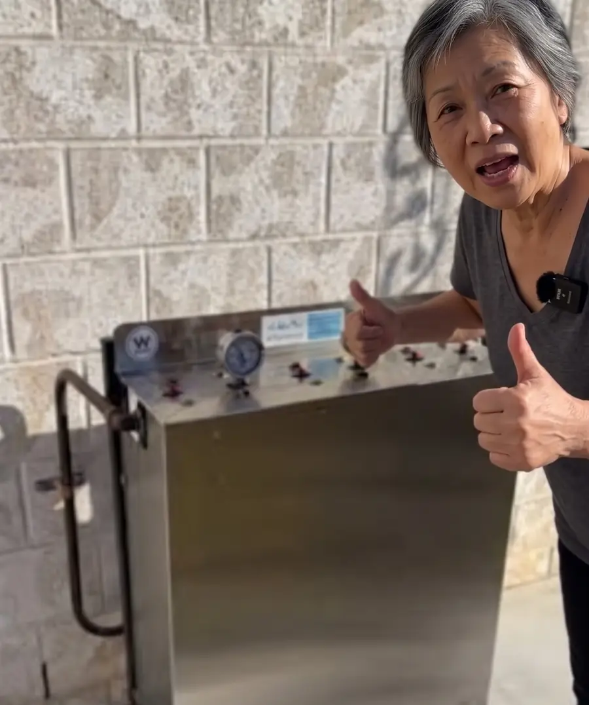
Eastern Suburbs Whole-house water filter 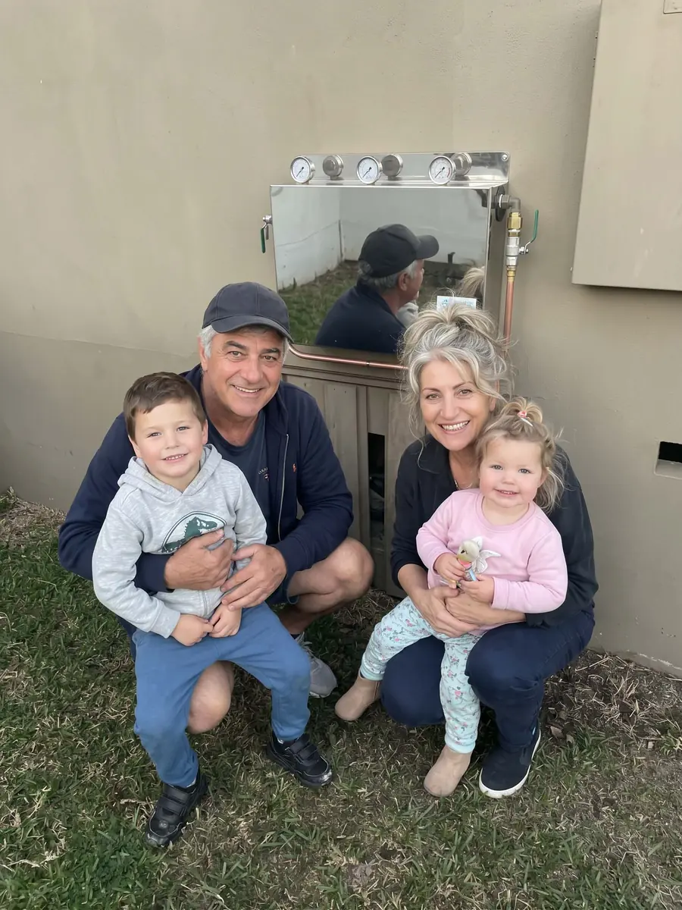
Sydney CBD Whole-house filtration
Find Your Fit
Water Filter Installation Options For Sydney Homes
Every system is quoted after your free water quality test, as one fixed installed price with the cartridge costs shown alongside it.
-
Whole House
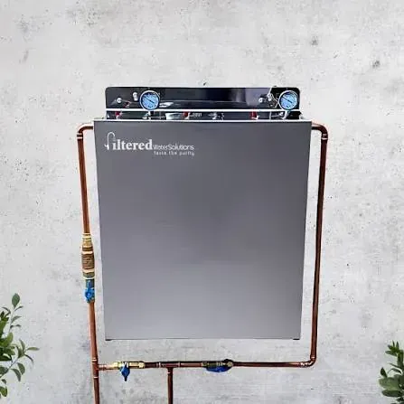
Soft Water System
Whole-house soft, filtered water at every tap and shower, treated where the water enters your home. Sized to your flow rate and pressure.
Contact Us For Installation + PricingOr call 0421 601 540
-
Under-Sink
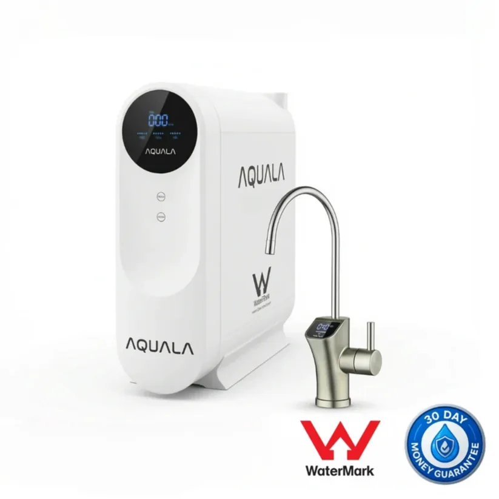
P500 Tankless Reverse Osmosis System
Reverse osmosis drinking water from its own filtered tap at the sink. Tankless, so it fits in the cupboard with no storage tank.
Contact Us For Installation + PricingOr call 0421 601 540
-
Most Popular
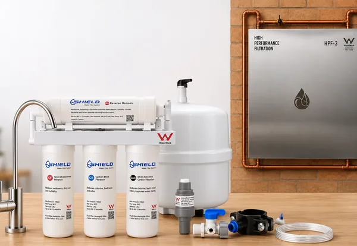
Home Filtration + Undersink Pure Drinking Water System
Stainless steel HPF-3 whole-house housing, Shield 3-stage filter system, reverse osmosis membrane and storage tank, premium filtered water tap. Final price confirmed once we assess your plumbing.
Contact Us For Installation + PricingOr call 0421 601 540
-
Before You Buy
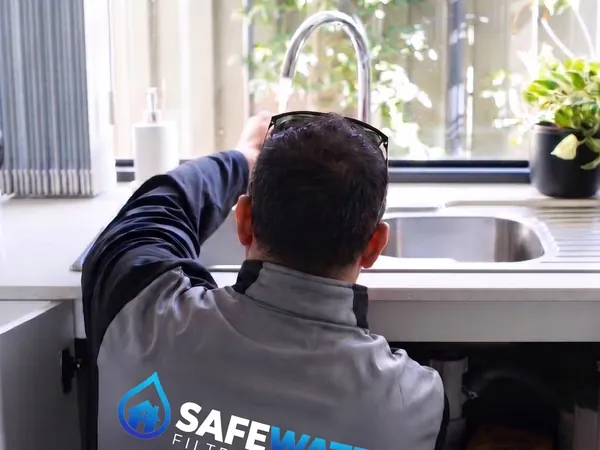
Water Quality Testing Audit
We test your water and check your plumbing on site, then quote. No obligation once you have the price.
Book My Free Water TestOr call 0421 601 540
Bundle not included: non-standard pipework or long pipe runs, cabinetry or benchtop modifications, replacement cartridges after the first set.
Choosing The Right Water Filter
The right filter depends on what you want to change, not the number of stages on the box. We confirm the specification for your property before quoting.
| Your goal | Likely solution | What we check first |
|---|---|---|
| Better drinking and cooking water | Under-sink carbon filtration | Cupboard space, tap position, occupants |
| Filtered water at every tap | Whole-house point-of-entry system | Peak flow rate, water pressure, mounting location |
| Highest level of drinking water treatment | Reverse osmosis with pre-filtration | Incoming pressure, tank space, reject water |
| Sediment, rust or particulates | Sediment pre-filtration by micron rating | Particulate load, cartridge capacity |
| Chlorine taste or odour | Appropriately specified activated carbon | Contact time, media type, rated capacity |
| Commercial or high-volume demand | Purpose-sized commercial filtration | Peak flow, daily volume, equipment specs |
NSW Health advises choosing filters certified against an appropriate standard: AS/NZS 4348 and NSF/ANSI 42 and 53 are the examples given. Ask any supplier to tie a reduction claim to the specific model and its test documentation.
Not Sure Which Filter? Ask A Licensed Plumber
Tell us what you want to change about your water. You get a system recommendation, a fixed installed price and the cartridge costs, free and with no obligation.
Our Systems
Tell Us The Goal. We'll Match The System.
Filtration is not one product. Pick what you actually want to change and the right setup is usually obvious.
For your home
For businesses and existing systems
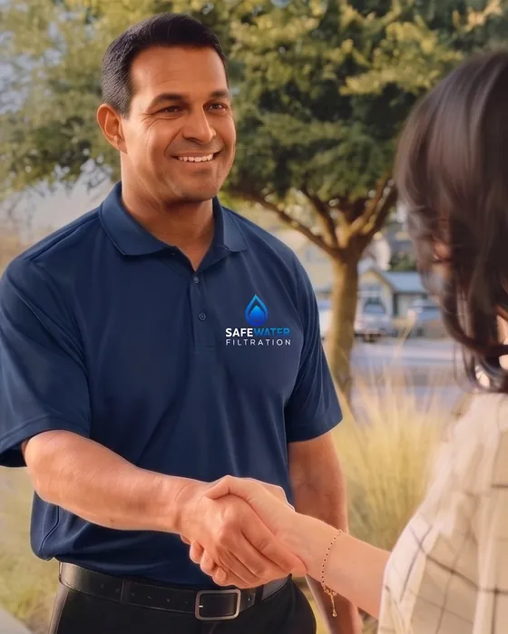
Why Choose Us
Installed Right, Backed Properly
Anyone can sell you a filter online. What you get from Water Filtration Sydney is the sizing, the licensed plumbing and the support after the van leaves.
Connecting filtration into a drinking water supply is plumbing work, and NSW requires a licence for it, residential or commercial.
Licensed, Not A Kit
NSW Contractor No. 358626C
Lifetime Labour Warranty
Plus 3-year product warranty
Running Cost Upfront
Cartridge costs before you commit
You get the system spec, the fixed installed price and the replacement cartridge costs before you commit. No surprise at the first service.
Sound Familiar?
Most Filtration Regrets Start Before Anyone Turns A Tap
Almost every system we are called out to fix was bought correctly and specified badly. Here is where it usually goes wrong.
The Taste Never Changed
A filter was fitted, but the media was wrong for the job. Chlorine taste and odour need an appropriately specified activated carbon stage, not just more stages on the box.
The Pressure Dropped
The system was sized below the household's peak flow. Everyone blames the filter; the real cause is a housing chosen without checking incoming pressure first.
Nobody Mentioned The Cartridges
The install price looked sharp until the first replacement. You should know the cartridge cost and the change interval before you say yes, not eighteen months later.
Compliance & Workmanship
Why Professional Installation Matters
- Isolation valves either side, so cartridge changes take minutes
- Correct sizing so the system does not throttle your water pressure
- Servicing clearance to actually drop the sumps at change time
- Leak prevention through correct fittings and pressure-tested joints
- WaterMark certification as the National Construction Code requires for listed plumbing products
Certified products, installed to Australian Standards by a licensed plumber.
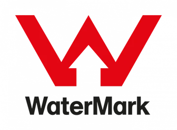
WaterMark certified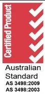
Australian Standard AS 3498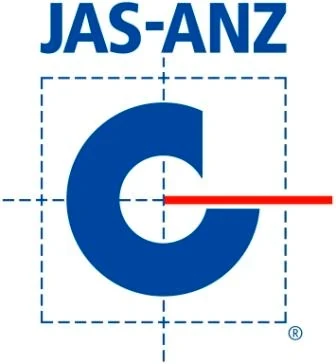
JAS-ANZ accredited Australian Made and Owned
Australian Made and Owned
Service Area
Water Filter Installation Across Sydney & Greater Sydney
Residential and commercial water filtration supplied, installed and serviced across Sydney Metro and Greater Sydney by licensed plumbers.
- Sydney CBD & Inner Sydney
- Eastern Suburbs
- Inner West
- Lower & Upper North Shore
- Northern Beaches
- Western Sydney
- Hills District
- South-West Sydney
- Southern Sydney
- Sutherland Shire
- Macarthur
- Greater Sydney
Suburb not listed? Call 0421 601 540 and ask.


Our Reviews
Installs You Can Inspect. Reviews You Can Check.
5.0 out of 5 on Google. Neat pipework, isolation valves either side, and housings mounted where the sumps can actually be dropped at change time.
Called Ahead, Helpful And Pleasant
Excellent service tech called before arrival and was very helpful and pleasant.
Carmel Bhatty, Google review
Neat, Swift Under-Sink Installation
I recently purchased and had installed the 6-stage water filtration system. The technician communicated clearly his arrival time. The system was installed very neatly in the under-sink cupboard, maximising the remaining space. The technician was an absolute delight throughout and installed the system very swiftly.
Daniel Colantoni, Google review
Happy With My New Water Filter
The technician came out and installed my water filter and I'm very happy with it, highly recommend!!
Lucy Sun, Google review
Filtration brands we install and service, so replacement cartridges stay available for the life of the system.
Before You Decide
The Questions We Get Asked Most
Straight answers on price, cartridges, pressure and which system suits your property. If yours is not here, pick up the phone and ask.
How much does water filter installation cost in Sydney?
It depends on the system, the plumbing configuration and where the equipment mounts. An under-sink filter in an accessible cupboard is a different job to a whole-house system on an external wall. We quote the system and installation as one fixed price, with the cartridge costs shown alongside it. Our Home Filtration + Undersink Pure Drinking Water System is $5,500 installed for a standard installation.
Am I committing to anything by asking for a quote?
No. The quote is free, there is no call-out fee to prepare it, and there is no obligation once you have it. You get the system specification, the installed price and the ongoing cartridge costs so you can compare us properly against anyone else.
Whole-house filter or under-sink filter?
Whole-house is point-of-entry: every tap, shower and appliance gets filtered water. Under-sink is point-of-use: one dedicated tap for drinking and cooking. If taste at the kitchen bench is the goal, under-sink is usually the practical choice. Many Sydney homes run both.
What if the system doesn't fix what I wanted fixed?
That is why we assess before we quote rather than selling from a catalogue. We tell you what a given system is designed to reduce and what it is not, so the expectation is set before you spend anything. If our workmanship is ever the problem, the lifetime labour warranty means we come back and fix it.
Is reverse osmosis right for every home?
No. It needs adequate incoming pressure, cupboard space for the manifold and storage tank, and it sends some feed water to drain. If you mainly want less chlorine taste and odour, a properly specified activated carbon filter often does the job with simpler servicing, and we will say so.
How often do cartridges need replacing, and what does that cost?
By the manufacturer's rated capacity and your usage. Sediment and carbon block cartridges are commonly rated around six months; some silver-activated carbon cartridges around twelve months or a rated litre capacity; RO pre-filters six to twelve months, with the membrane less often. Your quote lists the cartridges your system takes and what each one costs, so there is no surprise at the first service.
Will a filter drop my water pressure?
A correctly sized system should not. Pressure complaints almost always trace to a system sized below the property's peak flow, or cartridges left in past their rated capacity. We check incoming pressure and estimate peak demand before specifying a whole-house system.
Do you install commercial systems and service existing ones?
Yes to both. We install commercial filtration for offices, cafes, restaurants, commercial kitchens, gyms and retail premises, specified from peak flow, daily volume and the equipment being fed. We also replace cartridges in systems installed by someone else. Send a photo of the housings and we will identify what it takes.
How It Works
Four Steps From Enquiry To Filtered Water
Tell us your goal
Drinking water, whole-home filtration, or a commercial system. 30 seconds on the form or one phone call.
We assess and quote
Plumbing, location, space, pressure and flow, then a fixed installed price with the cartridge costs shown.
Licensed installation
Installed, pressure-tested, commissioned and the area left clean.
Ongoing servicing
We explain which cartridges it takes and when, and can schedule the replacements for you.
Takes about 30 seconds
Ready For Better Water?
Call 0421 601 540 or tell us what you want to change and you'll get a system recommendation, a fixed installed price and the running costs.